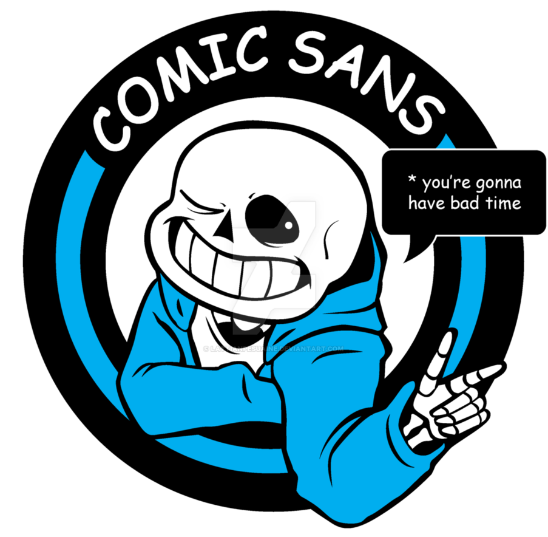
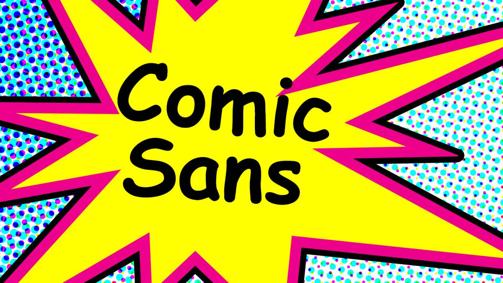

Comic Sans es un tipo de letra creado en 1994 por el diseñador Vincent Connare , empleado de Microsoft. El tipo de letra imita el estilo de los diálogos de los tebeos, que en Estados Unidos es un aspecto muy cuidado y llevado a cabo por especialistas. Concretamente, Connare dice haberse inspirado por dos tebeos clave de la evolución del comic en los años 80: Watchmen y El regreso del señor de la noche.
Inicialmente, ese tipo de letra iba a incluirse en uno de los proyectos de Microsoft más criticado y ridiculizado: Microsoft Bob . Bob era un programa creado para Windows 3.1 que pretendía ser un nuevo tipo de interfaz de usuario diseñado para novatos y que en vez del escritorio de Windows mostraba las habitaciones de una casa en la que los objetos abrían las aplicaciones. La aparición de Windows 95 permitió a Microsoft enterrar rápidamente un producto que nunca debió salir a la luz. En 2006, en una lista de los 25 peores productos tecnológicos de la historia publicada por la revista PCWorld , Bob todavía se mantenía en el séptimo lugar.
Comic Sans se diseñó para los globos de ayuda al usuario en Bob, pero no llegó a utilizarse allí. Pero sí se incluyó en el Windows 95 Plus! Pack, un CD de ampliación de WIndows 95, que incluía entre otros, la primera versión de Internet Explorer. Todo el contenido del Plus! Pack se incluyó en Windows 98 y en otros productos de Microsoft (Publisher, Internet Explorer, MS Comic chat, etc.), entre otros el Core Fonts for the Web, un paquete de fuentes que Microsoft distribuyó gratuitamente entre 1996 y 2002, pero cuya licencia ha permitido que se siga distribuyendo y usando, no sólo en Windows, sino en cualquier sistema operativo.
Instalada en prácticamente todos los PCs del planeta, no sorprende que Comic Sans se haya utilizado mucho y para todo tipo de documentos. Y ese uso indiscriminado es el que ha movilizado a bastantes diseñadores gráficos.
Para los diseñadores gráficos, los tipos de letra están diseñados para un determinado tipo de documentos, por ejemplo, para documentos formales o para documentos informales. Y Comic Sans sería un tipo de letra desenfadado que no debería utilizarse en documentos serios. Además, parece ser que técnicamente la fuente no es demasiado buena. Por ejemplo, el kerning, el espacio entre letras, que permite aumentar o reducir el espacio entre dos letras concretas para mejorar la legibilidad, y que supone bastante trabajo a la hora de diseñar un tipo de letra porque hay que estudiar y ajustar todas las combinaciones posibles, en Comic Sans es prácticamente inexistente.
En 1999 dos diseñadores gráficos que acabarían casándose, Holly Sliger y Dave Combs, pusieron en marcha Ban Comic Sans, una campaña en contra de ese uso indiscriminado de Comic Sans. Esa campaña, que suele utilizar el humor y el buen diseño (el 1 de abril de 2011, el día de los inocentes anglosajón, Google mostraba algunos resultados de búsquedas en Comic Sans), sigue en marcha con un éxito relativo.
Pero quizás esta polémica no es más que un ejemplo del tiempo en que vivimos, en que cualquier manifestación artística acaba convertida en objeto de consumo masivo e inevitablemente maltratada. ¿Cuánta música se escucha en situaciones opuestas para la que fue compuesta? ¿Cuántas imágenes se utilizan en contextos que contradicen su mensaje? ¿Cuántos mensajes políticos acaban sirviendo para vender camisetas? ¿Quién espera todavía que haya relación entre forma y sentido?
| Otras fuentes | ||
|  |  | |
| Noelia Segovia Sánchez ® | ||